Префектура Ямагути · Симоносэки и Минэ · сакэ и хлеб
Сакэ и хлеб Ямагути: магазин сакэ в Симоносэки и пекарня в бывшей почте Минэ
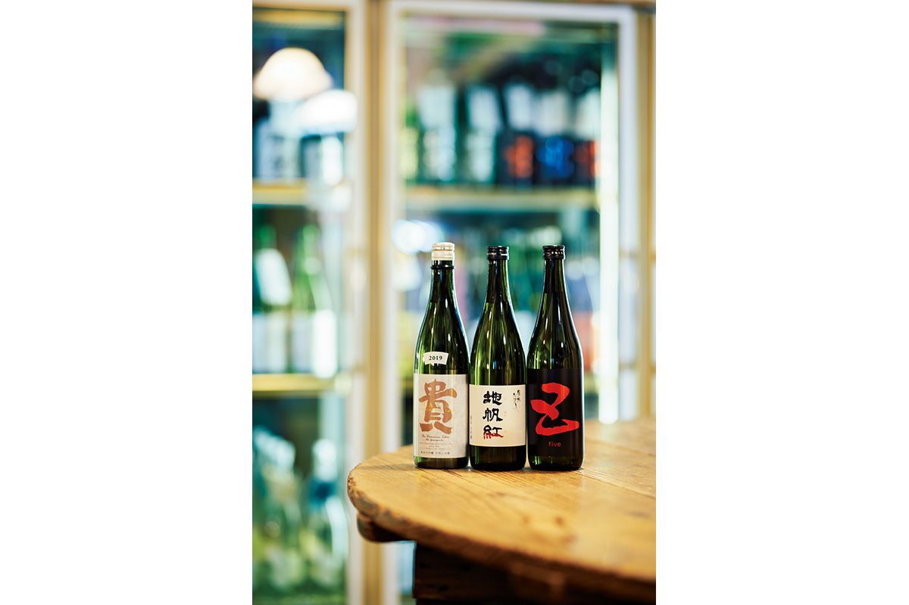
Ямагути славится рыбой, курицей и фруктами, но о здешней еде нельзя говорить, не вспомнив о сакэ. Мы зашли к человеку, который знает местное сакэ лучше многих, а потом отправились в город Минэ за хлебом, ради которого сюда едут из других префектур.
Сакэ
Префектура известных марок
«Дассай», «Тоё бидзин», «Ганги», «Така»: многие пробовали хотя бы одну из этих марок сакэ, и все они родом из Ямагути. Природы здесь много, вода чистая, и сакэ варят повсюду. При этом в каждой части префектуры у него свой характер, который зависит прежде всего от воды.
Магазин
«Дзидзакэ-но Маэцуру»: проводник в мир местного сакэ
Магазин «Дзидзакэ-но Маэцуру» стоит у большой дороги в Симоносэки, на западной оконечности префектуры. Его открыли в декабре 1989 года как обычную районную лавку. Начинали родители, а сын, Кэндзо Маэцуру, сам собой втянулся в семейное дело. Холодильные витрины и полки забиты сакэ, сливовыми ликёрами и сётю, японской крепкой водкой. Особая гордость магазина это местное сакэ.
«Думаю, у нас есть сакэ почти всех заводов префектуры»
Кэндзо Маэцуру
Мы попросили его объяснить, чем сакэ Ямагути отличается от остального японского.
Префектура лежит на самом западе острова Хонсю и с трёх сторон окружена морем: на севере и западе Японское море, на юге Внутреннее Японское море. Через префектуру проходят невысокие горы Тюгоку, и они делят её на районы с разным климатом и разной почвой.
В центре префектуры раскинулось Акиёсидай, крупнейшее в Японии карстовое плато. Вода здесь мягкая, но богатая минералами, что для Японии редкость. По словам Маэцуру, сакэ на такой воде получается строгим и плотным. Самый яркий пример это завод «Омине сюдзо»: в 2010 году он снова начал варить сакэ после почти 50 лет перерыва, и его сакэ становится только лучше, если дать ему полежать. Похожий твёрдый характер, по его словам, и у марки «Така» завода «Нагаяма Хонкэ сюдзоба».
На востоке префектуры лежит город Ивакуни. Через реку Нисики здесь перекинут мост Кинтайкё, старейший деревянный мост Японии, а сакэ варят на подземных водах из долины этой реки. Вода мягкая, и сакэ получается мягким. Здесь работают «Сакай сюдзо», известный маркой «Гокё», и «Яосин сюдзо», который делает «Ганги». В горах на западе Ивакуни стоит и «Асахи сюдзо»: его «Дассай» давно идёт своим путём.
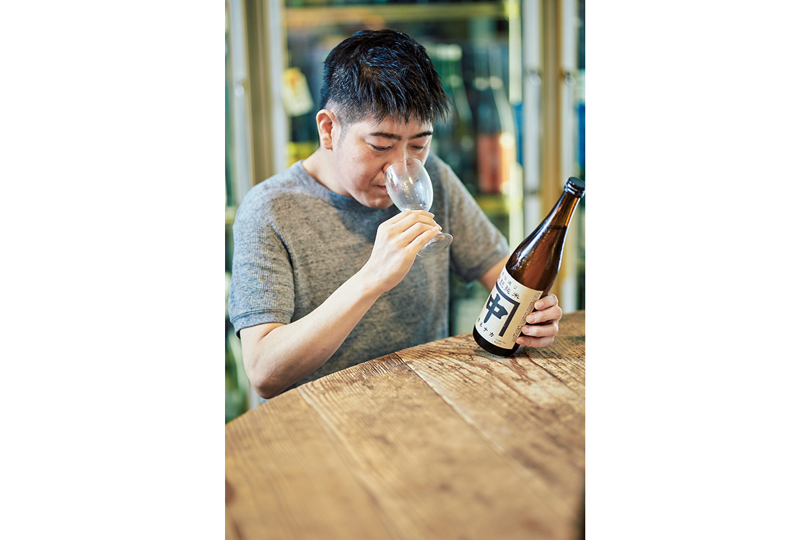
На побережье Японского моря много заводов собралось в городе Хаги. Здесь, по словам Маэцуру, преобладает нежное сакэ, которое будто раскрывается во рту. Лучший пример это «Тоё бидзин» завода «Сумикава сюдзоба», любимая марка жителей префектуры.
Чтобы показать, насколько разным бывает местное сакэ, до пандемии Маэцуру устраивал дегустации прямо в магазине: после закрытия за стойкой собирались всего пять гостей.
«Я хочу, чтобы сакэ полюбило больше людей. Если довести человека до входа в этот мир, дальше интерес будет расти сам. На заводах сейчас меняются поколения, и многие пробуют новое: сами выращивают рис для сакэ, нарочно не шлифуют зерно, заквашивают сакэ не на рисовом, а на соевом кодзи. Местное сакэ сейчас цветёт на все лады, и мне хочется, чтобы о нём узнали»
Кэндзо Маэцуру
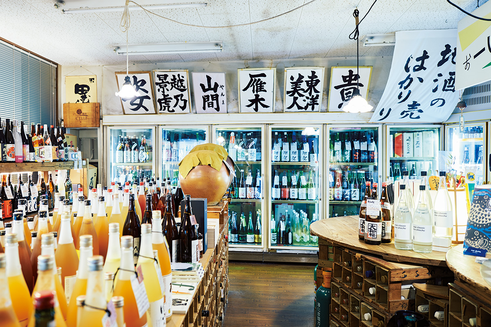
«Дзидзакэ-но Маэцуру»
- Адрес
- префектура Ямагути, Симоносэки, Яманота-хонмати, 15-11
- Телефон
- +81 83-253-1722
- Часы работы
- 10:00–21:00
- Выходные
- нерегулярно
- Сайт
- jizake.link
Вкус
Три района, три характера сакэ
Побережье Японского моря
Вокруг Хаги на побережье Японского моря всегда много свежей рыбы и морепродуктов. Сасими здесь едят каждый день и макают в местный сладковатый соевый соус. Поэтому сакэ в этих краях чаще мягкое, яркое и ароматное, оно подстраивается под сладость еды.
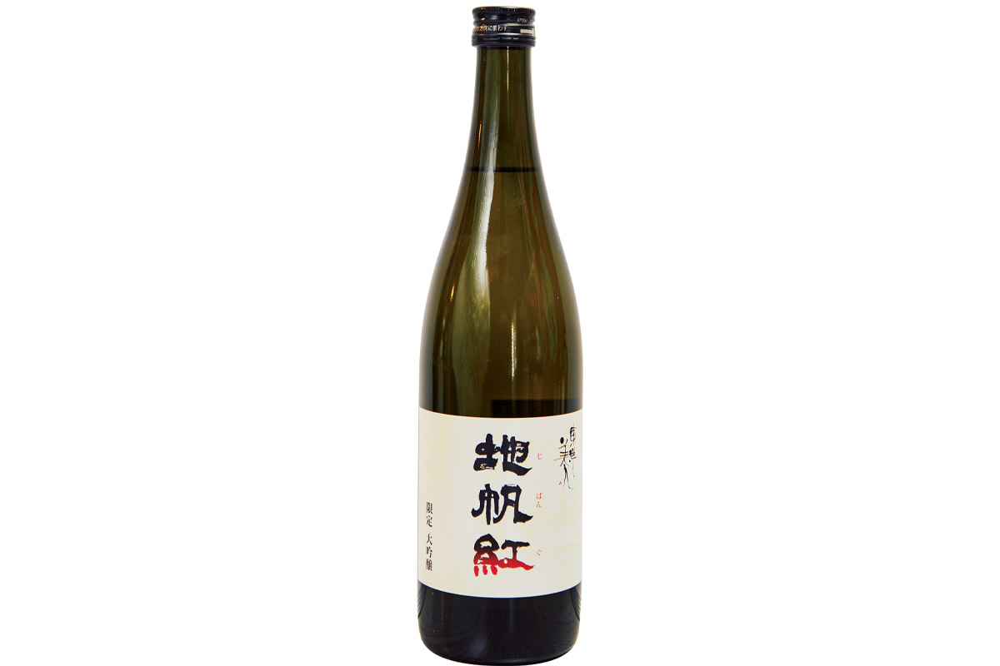
Ивакуни
Ивакуни знают по мосту Кинтайкё: пять его арок выгнуты над рекой Нисики, и это один из самых известных мостов страны. Большинство местных заводов берут мягкую воду той же реки, поэтому сакэ здесь в целом мягкое и словно тает во рту.
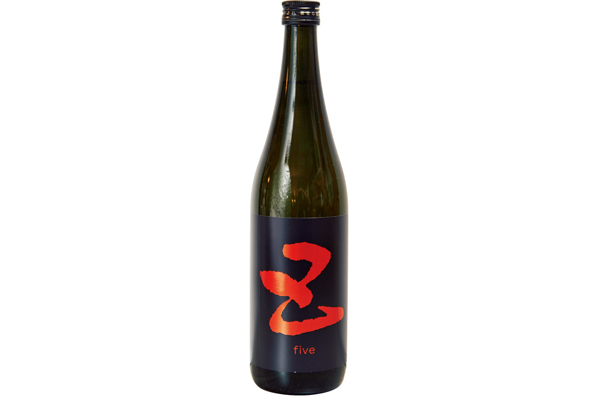
Центр префектуры и Акиёсидай
Акиёсидай, крупнейшее карстовое плато Японии, даёт мягкую воду с минералами, редкую для страны. Сакэ здесь получается с твёрдым стержнем и выдерживает долгую выдержку, вкус у него мощный и плотный.
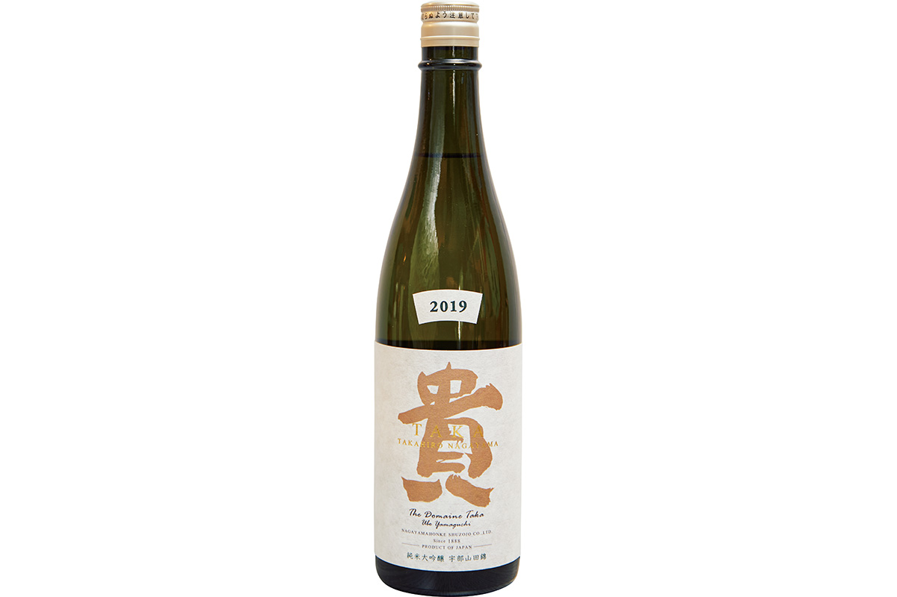
Хлеб
«Пти Лаб бэйкери»: пекарня, из которой выходят с улыбкой
Город Минэ знают по пещере Акиёсидо и карстовому плато, вокруг него много красивой природы. И здесь же есть пекарня, у которой выстраиваются очереди из людей всех возрастов. Рядом со станцией Минэ стоит небольшое старое здание с милым ретро-фасадом. Это и есть «Пти Лаб бэйкери».
«По субботам гости иногда стоят в очереди ещё до открытия. Приезжают даже из других префектур, и это очень приятно»
Кана Найто
Хозяйка пекарни Кана Найто впервые испекла хлеб в 23 года. Дальше она училась сама: пекла и продавала хлеб в мастерской, которую устроила в одной из комнат своего дома, и вела уроки выпечки. В марте 2019 года она за свой счёт издала книгу «Хлеб каждый день» с рецептами, которые собирала десять лет. Тогда ей показалось, что пора двигаться дальше, и в этот момент она нашла дом для пекарни.
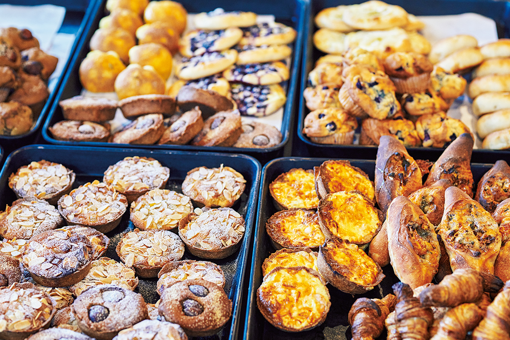
Зданию около ста лет. Его построили под почту, потом в нём продавали ткани для кимоно, а когда хозяйка впервые его увидела, дом пустовал.
«Я влюбилась с первого взгляда, сразу пошла к управляющему и сказала: хочу открыть здесь пекарню!»
Кана Найто
Пекарня открылась в мае 2019 года, о ней сразу заговорили, и очередь у дверей с тех пор не исчезает. Главная причина в выборе. Видов теста, плотного и мягкого, здесь всегда больше десяти, а на полках стоит пёстрая выпечка, от постоянной до сезонной. Начинки для сэндвичей и несладких булочек тоже готовят сами.
«Мы не используем добавки и стараемся, чтобы чувствовались сезон и сами продукты. Каждое утро работаем с командой на полную мощность»
Кана Найто
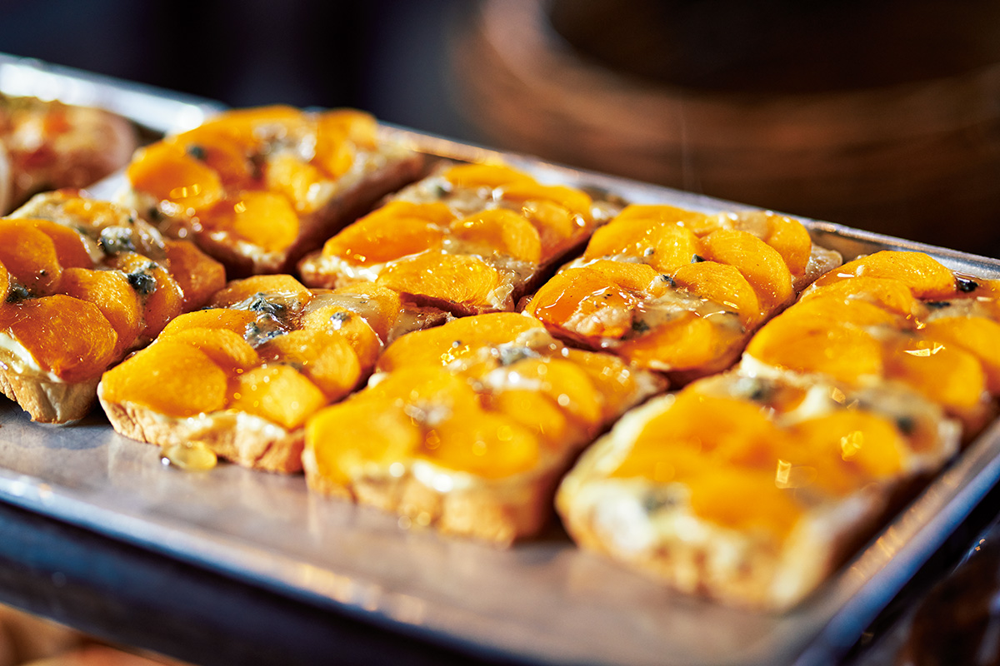
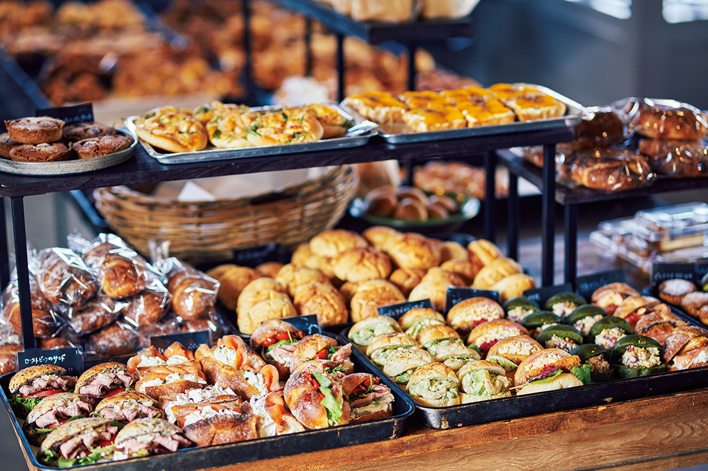
Кроме выпечки сюда тянет и сама хозяйка. На стене висят слова, которые она написала от руки: «Хочу создать место, где можно бережно относиться и к соседу, и к соседу соседа».
«Человека всегда поддерживают другие люди. Сейчас легко кого-то осуждать и требовать, чтобы всё было либо белым, либо чёрным. А я хочу, чтобы здесь чувствовались тепло и связь между людьми»
Кана Найто
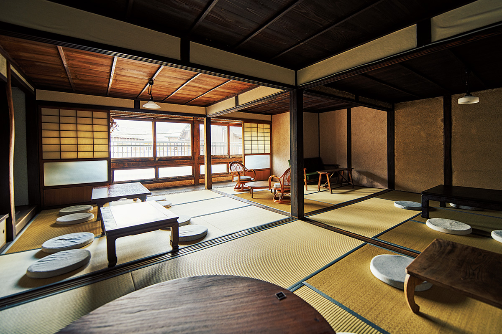
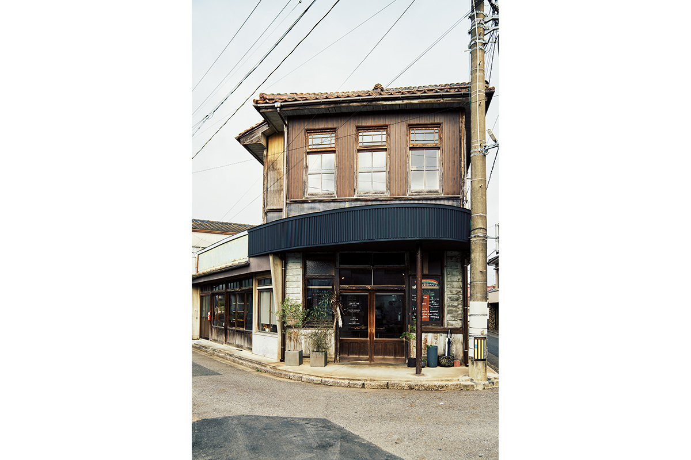
«Пти Лаб бэйкери»
- Адрес
- префектура Ямагути, Минэ, Омине-тё Хигасибун, 3405-3
- Часы работы
- 11:00–16:00
- Выходные
- воскресенье, понедельник, праздничные дни
Фото: Рюсукэ Хонда.